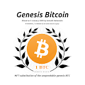
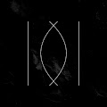
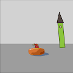
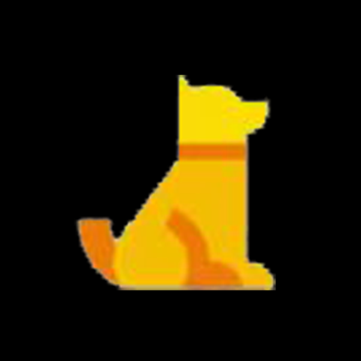
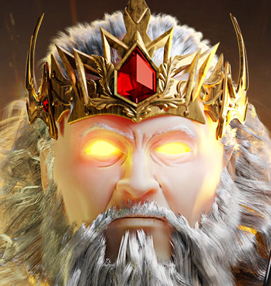
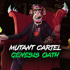
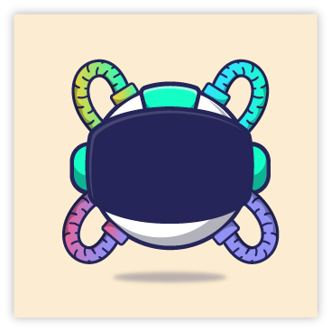
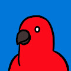
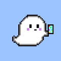
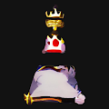

Freaks N' Guilds - Migrated （截至 2022 年 4 月 13 日，目前有 11,395 个 Stake 中的 10,451 个。占总供应量的 92.5%。这个数字会影响 Opensea 上显示的持有者数量） 截至 2022 年 4 月 13 日，已销毁 1164 个 NFT 实际供应
Free Betty 项目网站、社交联系方式、项目介绍内容详见：https://opensea.io/collection/free-betty Free Betty Collection 由 10,000 个随机生
G-Punks G-Punks 是一个随机生成的 1500 像素 G，带有一个巨大的鼻子。 G-Punks NFT - 常见问题（FAQ） ▶ 什么是 G-Punks？ G-Punks 是一个 NFT（Non-fungible to
G-Star RAW 3301 Community Token G-Star RAW 3301 Community Token NFT - 常见问题（FAQ） ▶ 什么是 G-Star RAW 3301 社区代币？ G-Star RAW 3301 社区代币是一个 NFT（不可替代代币）集合。存储在区块链上的数字艺术品集合。 ▶ 有
Gen Shit 我们超过了 2000 名追随者……!!我们希望继续增长，我们提供 3 GenerativeShit 对于一些幸运的人!!，Like和评论。在 48 小时内完成。 超过 25% 的薄荷里程碑，50% 即
Gen-0 Mebots 一个 NFT 健身收藏品，随着您采取 IRL 的每一步而变得更加独特和有价值。今天铸造限量版 (9,999) Gen-0 Mebot。 您的 MEBOT 是您的数字孪生生物化身。您的步骤有助于探索
Genbit Bunnies Genbit Bunnies - 可收藏的生成 NFT 兔子。仅铸造了 7,000 枚。 每只兔子都是 1of1 单一的独特版本，由手绘零件创建，最初在Genbit Bunnies上铸造。 Genbit Bunnies 很可爱，但
Generative Alchemy Lab (Khemical Koalas) 生成炼金术实验室是由三个朋友在元宇宙深处发现的。 通过向创作者、收藏家和流浪者开放实验室——我们希望人们能像我们在数字艺术的创作和收藏中一样找
Generative Avatars by DungeonMaster 在我们的网站上玩，直接在 OpenSea 上玩，或者像传统的 NFT 一样将肖像上传到您的社交媒体资料。由你决定。立即在 OpenSea 上获取您的，并开始自定义您的地牢。或者质押
Generative Gradient Squares 生成梯度平方统计 创建于 12 个月前 976代币供应 7.5% 费用 过去 7 天没有售出生成梯度正方形。 Cryptomoron 创建的 2500 个渐变正方形的集合 生成梯度平方 NFT - 常见问题 (FAQ) ▶ 什
Generic Profile Pictures 这 2,200 张图像是 125,000 个可能变体的子集。使用的颜色和渐变是手工混合的，而组合是使用代码随机生成的。铸币厂默认是两个的倍数，每个钱包地址最多两个。没有
 Genesis Bitcoin NFT 纪念品和提议的不可使用的 BTC 的替代品。 Genesis Bitcoin NFT 不仅代表了加密历史上最伟大的事件，而且还代表了中本聪本人在 2009 年 1 月 3 日开采的第一个比特币的 所有权
 Genesis Blocks Art GENESIS NFT 会随着每次二次销售而发展。买家的钱包地址影响一代，为每次转账创造一个新的独特部分。它增加了 NFT 的稀有性和价值。 我是瑞士的网络和加密开发人员
 Genesis Bouncing Ball 什么是生成艺术？生成艺术是创造艺术的程序化方式。例如在上面的集合中，我有 8 个不同的背景、8 个不同颜色的球、6 个帽子和 6 个风景，使用软件可以创
Genesis Clovers Pop-Up Shop是一家概念 NFT 商店，以独特的生成艺术庆祝一年中的特殊时期。 我们相信艺术是用来分享的，因此您可以 赠送 所有 Pop-up Shop NFT 的个性化副本。 我们的第一
GENESIS COLLECTION Zodiacs by Raquel Casilda 这是我的创世纪系列：“十二生肖：符号与身份”，围绕着象征主义的使用，信仰与占星术与身份和人的性格有关。我已经包含了一些与不同星座相关的符号，
 Genesis Dog 什么是创世犬？ Genesis Dog 是一个 NFT（Non-fungible token）集合。存储在区块链上的数字艺术品集合。 Genesis Dog 代币有多少？ 总共有 1,000 个 Genesis Dog NF
 Genesis Gods: By NaelG NaelG 的 Genesis Gods 是一个优质的 NFT 集合，由 7,777 个独特的 NFT 组成，这些独特的 NFT 基于希腊神话中的众神从现在作为以太坊区块链上的 NFT 生活的元宇宙的天堂降临。该系列包
 Genesis Oath 我们徘徊，现在我们被找到了。邀请所有与 The Mutant Cartel 一起骑行的人来履行与 Genesis Oath NFT 的协议。 Genesis Oath NFT 兼作数字护照，允许成员访问 Mutant Cartel 并从中受益。 Genesis Oath 是一个集合
 Genesis Tiimy 时间引擎是一个平台，您可以在其中通过社交活动或玩游戏来赚钱 您需要做的就是遵循 2 个步骤： 1- 在 Twitter 上关注 Ternoa 和 Tiime Engine 2-购买 $CAPS 并将它们添加到您的 TERNOA 钱包
Gentangle Gentangle 是由“gen = to give life , to give to” + “tangle = to be bound, to be entangled”创造的词，意思是“在纠结中诞生的东西”。线条自由移动、纠缠
 Gentle Birds NFT 温柔、酷炫、优雅的小鸟合集，准备在 NFT 空间留下印记！ 我是在韩国有经验的插画家和设计师 Hee-bong。我对插图和 NFT 艺术品充满热情。 我从小就开始
 Gentle Ghosts Gentle Ghosts 是 5000 个独特的幽灵的集合，它们漂浮在 Metaverse… 什么是温柔的幽灵？ Gentle Ghosts 是一个 NFT（非同质代币）集合。存储在区块链上的数字艺术品集合。 Gentle Ghosts 代币有多少
 Geodetic Illusion 什么是大地错觉？ Geodetic Illusions 是一个 NFT（不可替代代币）集合。存储在区块链上的数字艺术品集合。 存在多少个 Geodetic Illusions 代币？ 总共有 87 个 Geodetic Illusions NFT。目前 7 位所有
Geodetic Moments - Light & Dark Geodetic Moments 收录了 100 张“缺席”拍摄的照片。 每个大地时刻都将观众置于一个世界的中心，一个被爱的人不在。 你不能忘记它们，但你也不能继续前进。 你可能认识那
Geoffrey Woo Geoffrey Woo 是拥有 5 项美国专利的发明家和拥有 3 篇经过同行评审的科学论文的科学家。他是 Archive Technologies Inc. (archive.com)、Health Via Modern Nutrition Inc. (hvmn.com) 和 Anti Fund Investment
Geohashes (for Everyone) 过去 7 天内没有售出 Geohashes (Genesis Collection)。 geohash将地理位置编码为存储在链上的一串字母和数字。故意省略图像和位置，以供其他人解释和
Giraffe Tower Baby 长颈鹿塔 NFT - 常见问题（FAQ） ▶ 什么是长颈鹿塔？ Giraffe Tower 是一个 NFT（非同质代币）集合。存储在区块链上的数字艺术品集合。 ▶ 有多少个 Giraffe Tower 代币？ 总共
GoBMaN WuZ HeRe by Val Kilmer X Remo “Gob-man Wuz Here”是 Kamp Kilmer Goblin Project 的第一部合作作品。受 Goblintown 项目启发的协作衍生项目（无从属关系）。 每个铸币的人都将收到“Gob-Man Wuz He
GoriByte GoriByte 是 5,000 个独特的 GoriByte NFT 的集合——独特的数字收藏品存在于以太坊区块链上。因为 GoriByte 持有者授予持有者独有的权益，例如品种、索赔、社区赠品等等。 GoriByte NFT - 常见
Gorilla Game NFT 1000 只大猩猩和 1000 只豹子在元宇宙中展开狩猎，争夺元丛林之王的终极称号。功能齐全的游戏将于 2022 年推出。拥有 NFT 可以让您提前进入游戏，并且只有 NFT 持有者可
GoroStore GoroStore NFT - 常见问题（FAQ） ▶ 什么是 GoroStore？ GoroStore 是一个 NFT（不可替代代币）集合。存储在区块链上的数字艺术品集合。 ▶ 有多少 GoroStore 代币？ 总共
Goshuin of Bodhisattva Jizo 这是延寿菩萨地藏的“御朱印”。追随者向他祈祷长寿，从疾病中恢复，家庭安全，远离邪恶等等。 地藏菩萨御朱印 NFT - 常见问题（FAQ） ▶ 什么是地藏菩萨
Goshuin of Bodhisattva Kannon 観音菩萨のご朱印です。観音菩萨は慈の菩萨です。求められた愿いに合わせその姿态を変え、あらゆる愿いを叶えることをままれています。 这是观世音菩萨
Gossamer Gods 黑暗、冒险和通往新世界的通道等着你。 Gossamer Gods NFT - 常见问题（FAQ） ▶ 什么是游丝神？ Gossamer Gods 是一个 NFT（非同质代币）集合。存储在区块链上的数字艺术品
GotchaGatchaNFT Gotcha Gatcha 是由 GG Team 与 MAHHArt 合作的原创 1000 个社区驱动的手绘收藏品项目。由 1000 个系列中的数百个特征与动画传奇 NFT 的独特组合创建而成。 得到了一个被囚禁在地球上千年


 Gen-0 Mebot。")